Equipment
- Large skillet
- Cutting board & sharp knife
- Baking sheet
- Plastic wrap
- Rolling pin
Ingredients
View photo
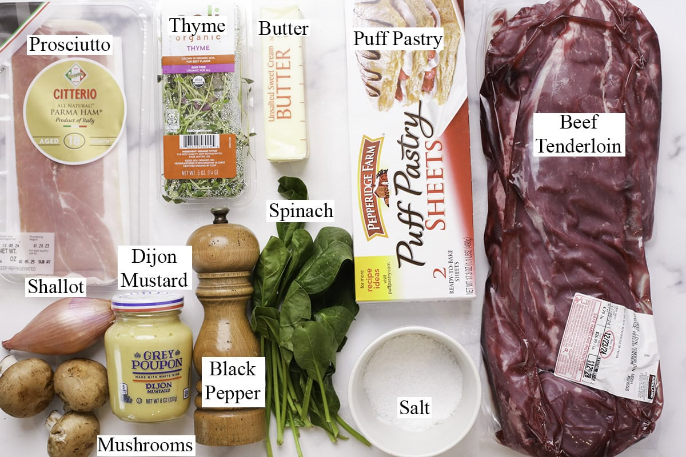
- 2 x 400g beef fillets
- Olive oil, for frying
- 500g mixture of wild mushrooms, cleaned
- 1 thyme sprig, leaves only
- 500g puff pastry
- 400g Spinach
- 8 slices of Parma ham
- 2 egg yolks, beaten with 1 tbsp water and a pinch of salt
- Sea salt and freshly ground black pepper
For the Red Wine Sauce
- 2 tbsp olive oil
- 200g beef trimmings
- 4 large shallots, peeled and sliced
- 12 black peppercorns
- 1 bay leaf
- 1 thyme sprig
- Splash of red wine vinegar
- 1 x 750ml bottle red wine
- 750ml beef stock
Allergen Information
- Puff pastry
- Butter
- Egg wash
Serving & Storage
- Serve warm after resting, when the pastry is crisp and the center is still pink.
- Store leftovers up to 2 days in the fridge; reheat gently to preserve the pastry.
Instructions
-
Wrap each piece of beef tightly in a triple layer of cling film to set its shape, then chill overnight.
View photo
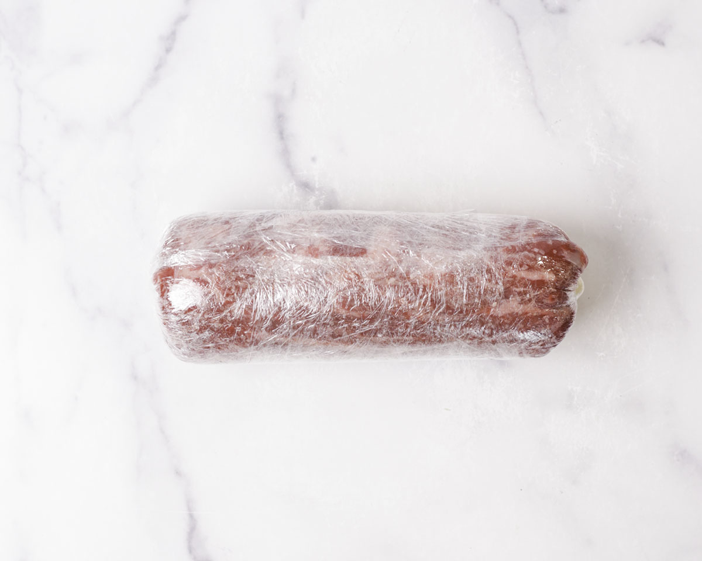
-
Remove the cling film, then quickly sear the beef fillets in a hot pan with a little olive oil for 30–60 seconds until browned all over and rare in the middle. Brush the beef tenderloin with mustard all around. Then refrigerate the beef until cooled or until needed while you prep the other ingredients.
View photo
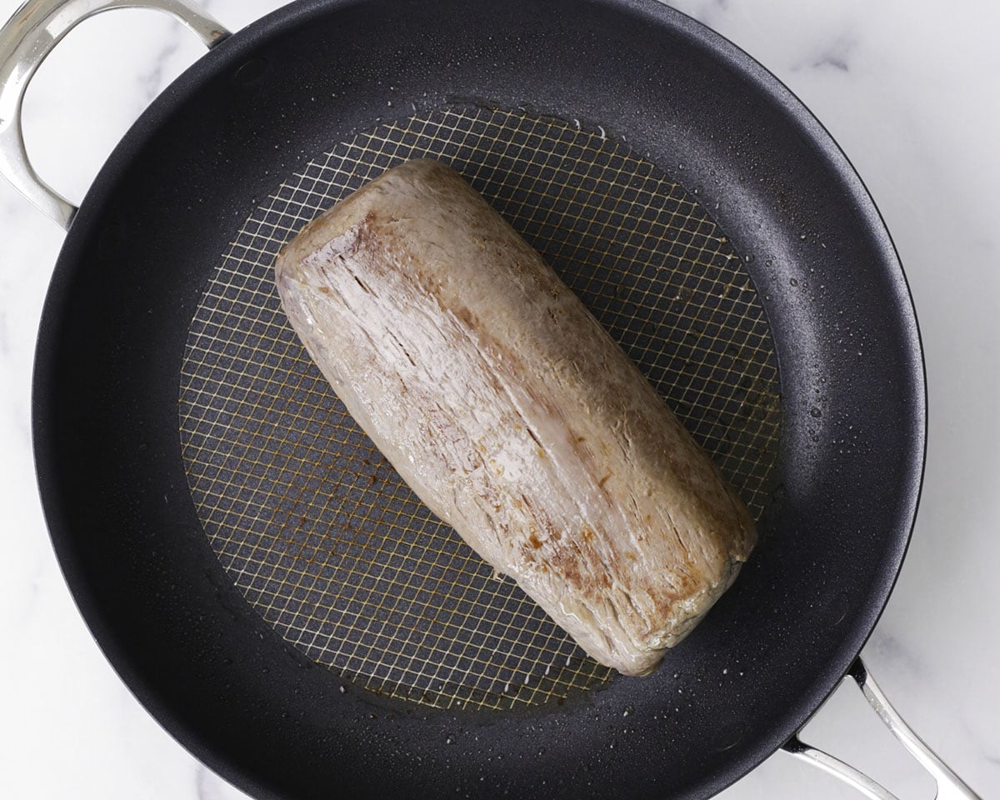
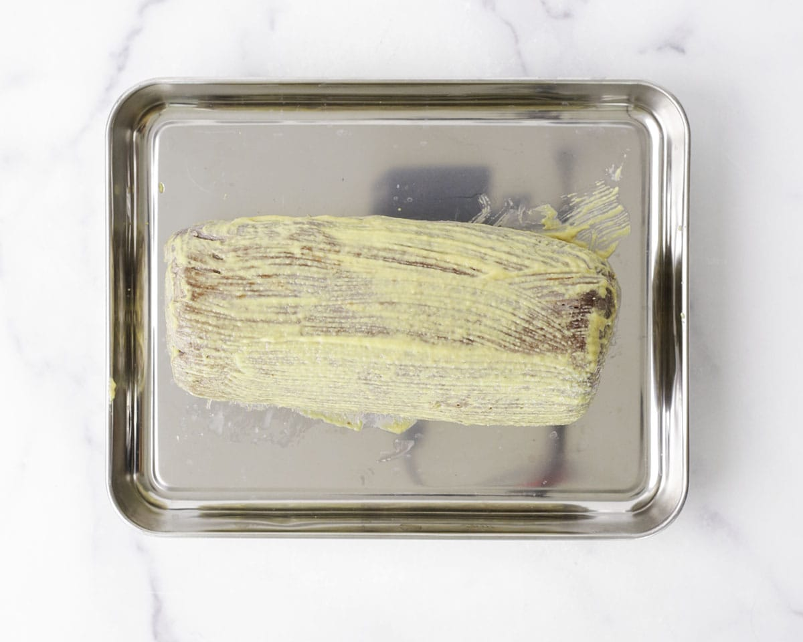
-
Finely chop the mushrooms and fry in a hot pan with a little olive oil, the thyme leaves and some seasoning. When the mushrooms begin to release their juices, continue to cook over a high heat for about 10 minutes until all the excess moisture has evaporated and you are left with a mushroom paste (known as a duxelle). Remove the duxelle from the pan and leave to cool.
View photo
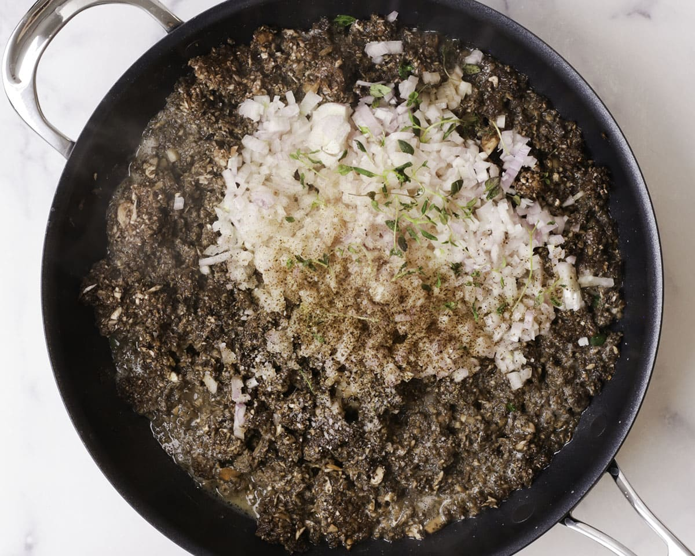
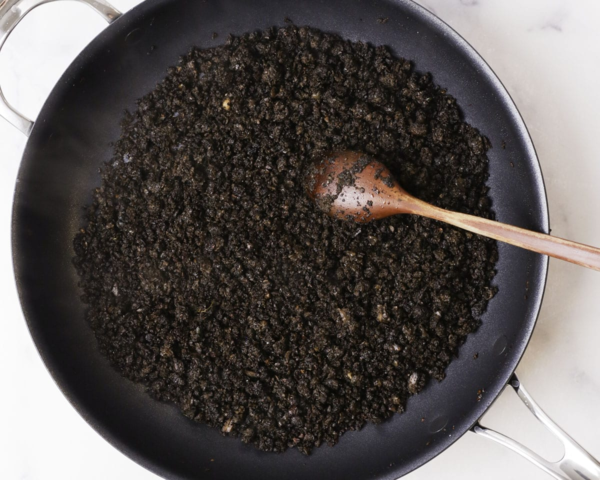
- Place pastry on a lightly floured surface and roll into a rectangle large enough to envelop one of the beef fillets. Chill in the refrigerator.
View photo
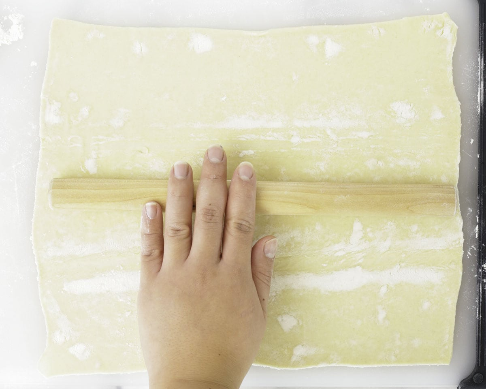
- Bring a pot of water to a boil and prepare a bowl of ice water. Add spinach to the boiling water and cook until wilted. Drain the spinach and immediately place it into the bowl of ice water. Cool the spinach completely then drain well. Gently squeeze the spinach to remove excess moisture.
- Gently spread open each spinach leaf and lay them down at the center of the cling wrap. Form a rectangle that's about 2 inches longer than your beef tenderloin and about 2.5 times the width of the tenderloin. Make sure the spinach overlaps each other and if you have enough spinach, double up on the layer.
View photo
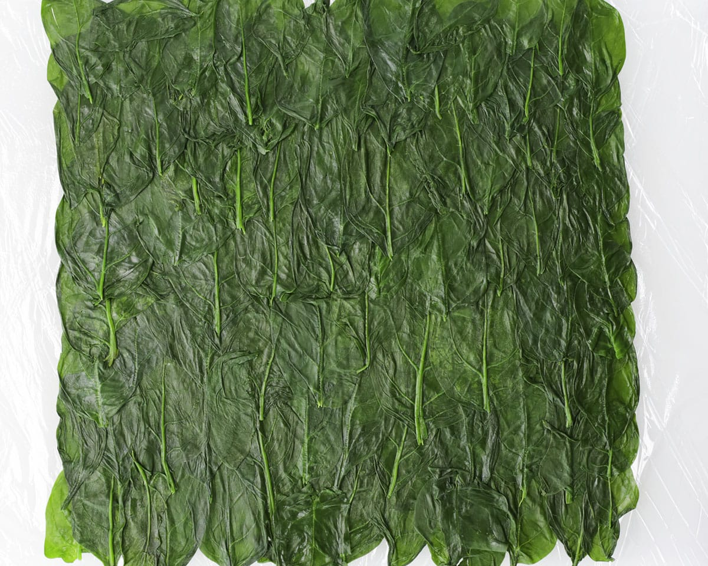
- Peel off a slice of prosciutto but keep it on the paper separator. Place the prosciutto on the spinach then gently peel off the paper. Repeat this process until the entire spinach layer is lined. You'll want to overlap each slice of prosciutto but by no more than 1 inch. If there are any holes, patch it up as needed at the end.
View photo
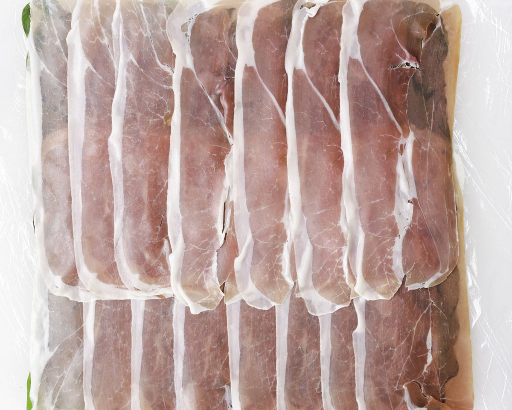
- Spread the cooled duxelles evenly over the prosciutto. Then press down firmly to compress the duxelles into a solid layer and to help it stick to the prosciutto layer.
View photo
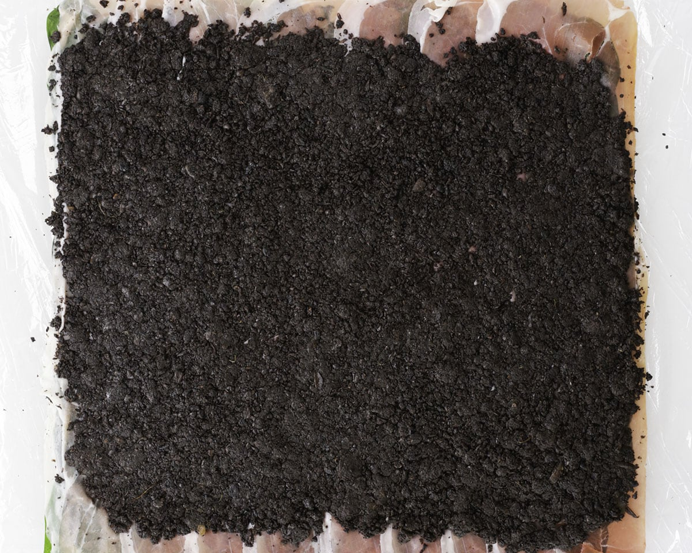
- Place the cooled beef tenderloin at the center of the duxelles.
View photo
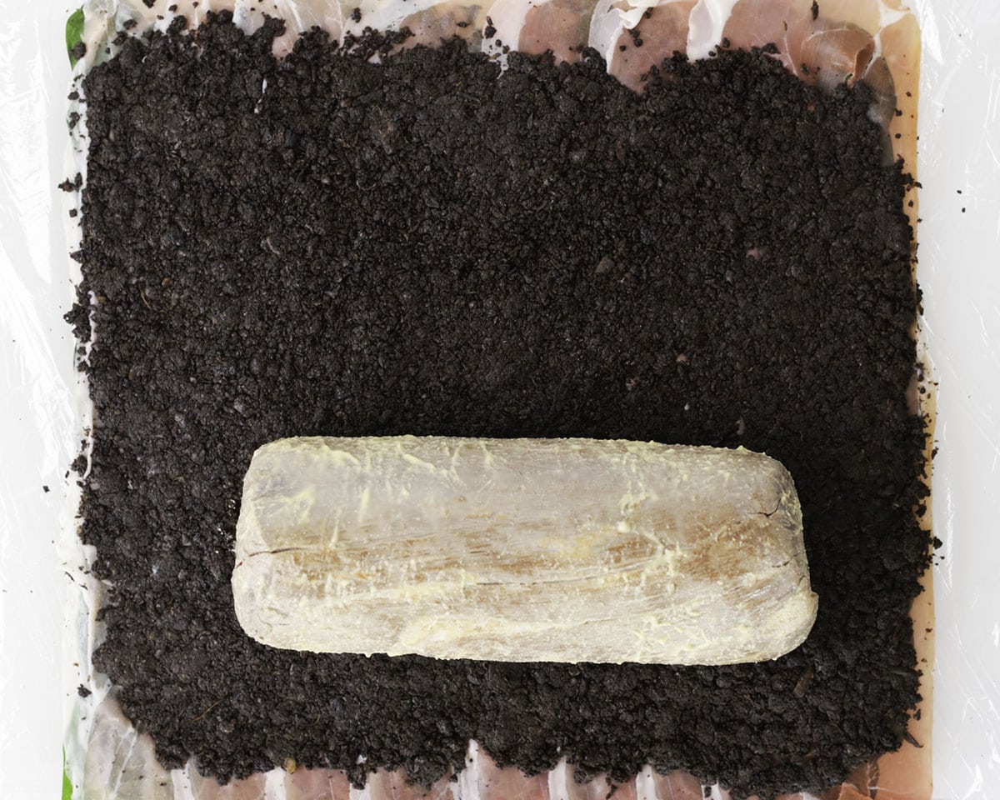
- Preheat the oven to 420 °F (215 °C).
-
Using the cling wrap, lift the 3 layers over the tenderloin. Peel back the cling wrap as needed as you roll the tenderloin to the other side. It's ideal for the layers to overlap slightly so the juices stay sealed in after baking. Fold the ends in to seal the sides. Then wrap the log securely with the cling wrap. Twist together the cling wrap at the ends of the log and roll the log while holding the cling wrap to create tension and keeping the long tight and round. Place the log in the fridge as you prepare the sauce.
View photo
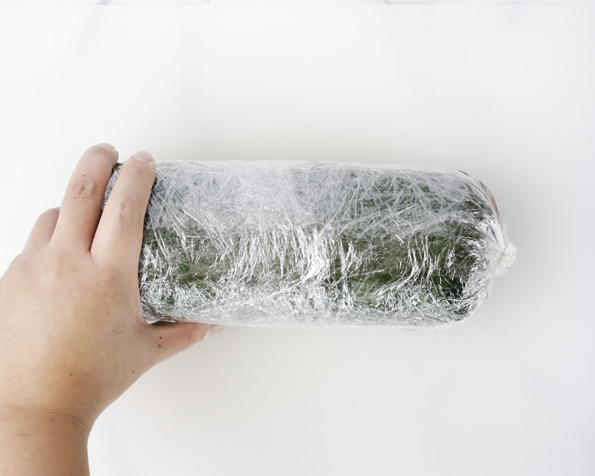
- To make the sauce, heat the oil in a large pan, then fry the beef trimmings for a few minutes until browned on all sides. Stir in the shallots with the peppercorns, bay and thyme and continue to cook for about 5 minutes, stirring frequently, until the shallots turn golden brown.
- Pour in the vinegar and let it bubble for a few minutes until almost dry. Now add the wine and boil until almost completely reduced. Add the stock and bring to the boil again. Lower the heat and simmer gently for 1 hour, removing any scum from the surface of the sauce, until you have the desired consistency. Strain the liquid through a fine sieve lined with muslin. Check for seasoning and set aside.
- Take the beef log out from the fridge and remove the cling wrap. Place the log in the middle, at one end of the puff pastry. Brush the other end, about a quarter of the way, with egg wash. Roll the log with the puff pastry to the other side. Make sure the puff pastry overlaps. Fold the puff pastry on both ends down and tuck it underneath the log. Place the log onto a parchment lined sheet pan and keep refrigerated while you work on the other optional sheet of puff pastry.
View photo
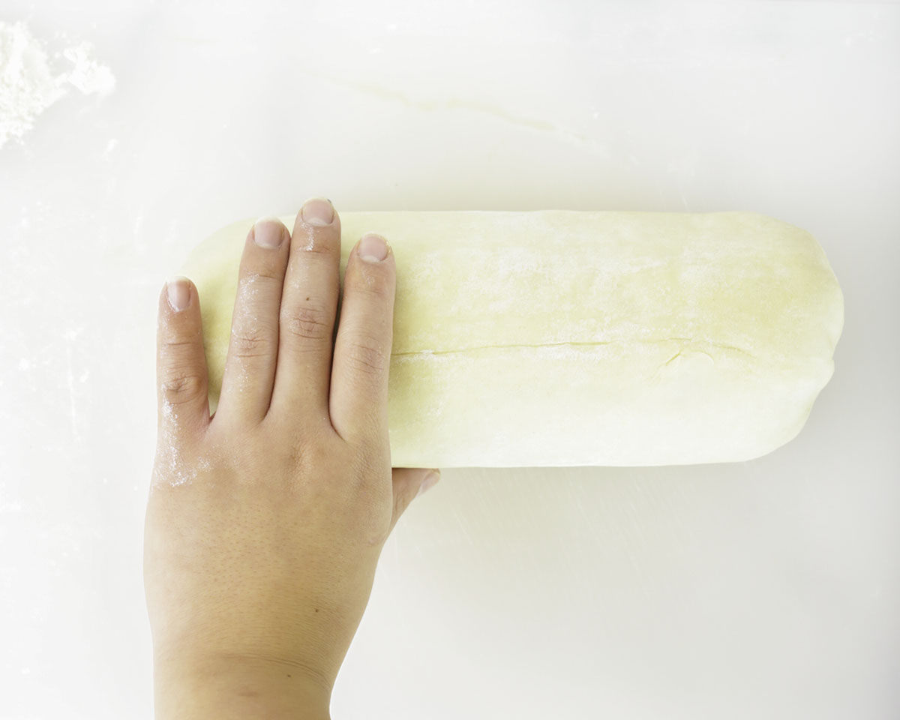
- OPTIONAL: On a cutting board or the back of a cold sheet pan, light dust it with flour. Roll out the long side of the puff pastry until it is about 2 inches longer than the log. Check and make sure the bottom of the puff pastry doesn't need more dusting, then use a lattice cutter and cut the puff pastry long ways. Make sure to cut with firm, even pressure all the way and you want the lattice lines to run parallel to the long side of the puff pastry. After cutting, go back and make sure all the cuts are cut all the way through. If not, use a paring knife to finish the cuts.
View photo
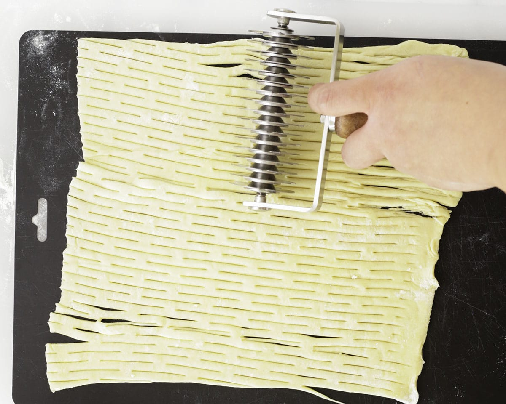
- Take the Wellington log out of the fridge and brush the entire surface with egg wash. Then drape the lattice puff pastry over the log. You can do so by holding the cutting board or sheet pan over the log and shake the pan with a shimmy motion to move the puff pastry. This way, you won't overstretch the pastry dough. Make sure the lattice cut is parallel to the length of the log. Once the puff pastry is draped over the log, adjust the dough so the lattice pattern is presented nicely. Cut off the excess dough and tuck the ends under the log. Brush the lattice with egg wash.
View photo
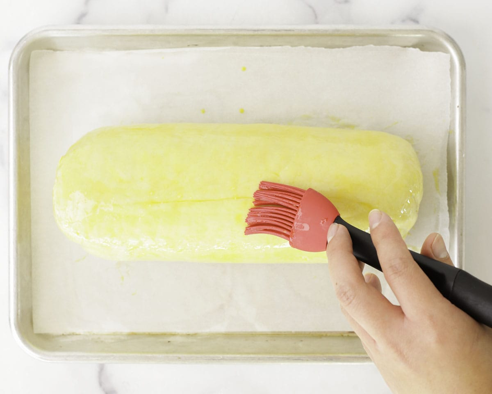
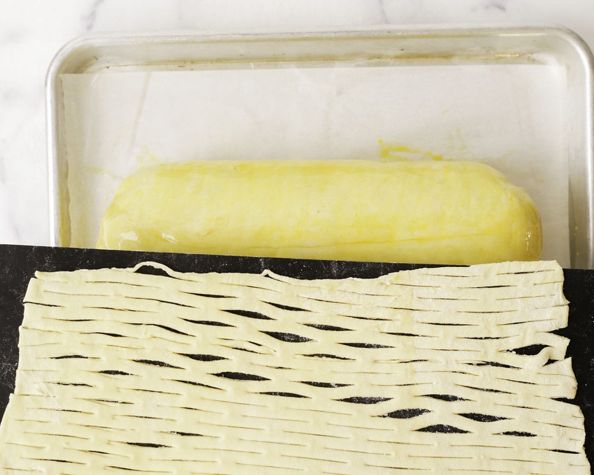
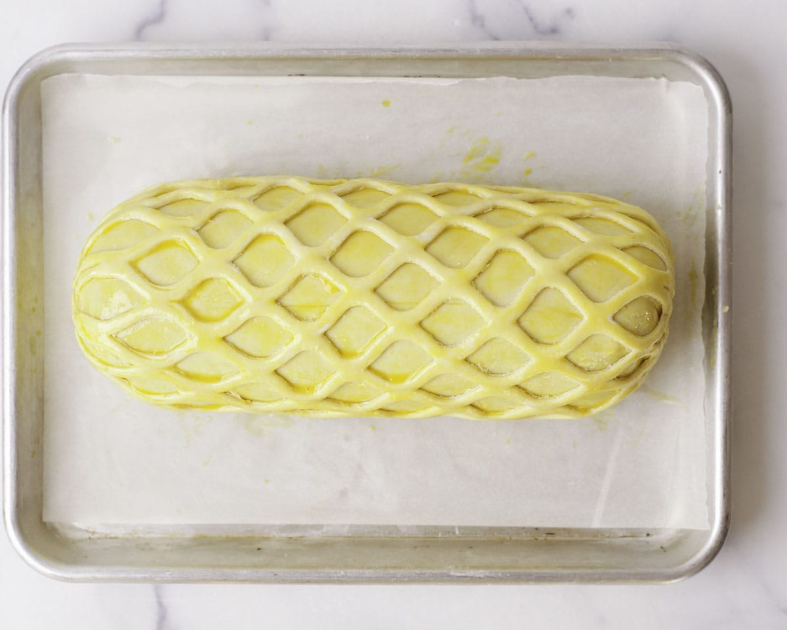
- Bake the Beef Wellington for about 40 minutes for rare, 45 minutes for medium rare, and 50 minutes for medium tenderloin. After 20-25 minutes of baking, or when the puff pastry is nicely golden brown on the outside, loosely place a sheet of foil over it to prevent the puff pastry from becoming too dark. Once done baking, remove the Beef wellington and let it rest at room temperature for about 25-30 minutes. This resting time is important to let the tenderloin and the duxelles absorb all the juices and to bring the tenderloin to your desired doneness. If cutting early, the Wellington may be undercooked.
View photo
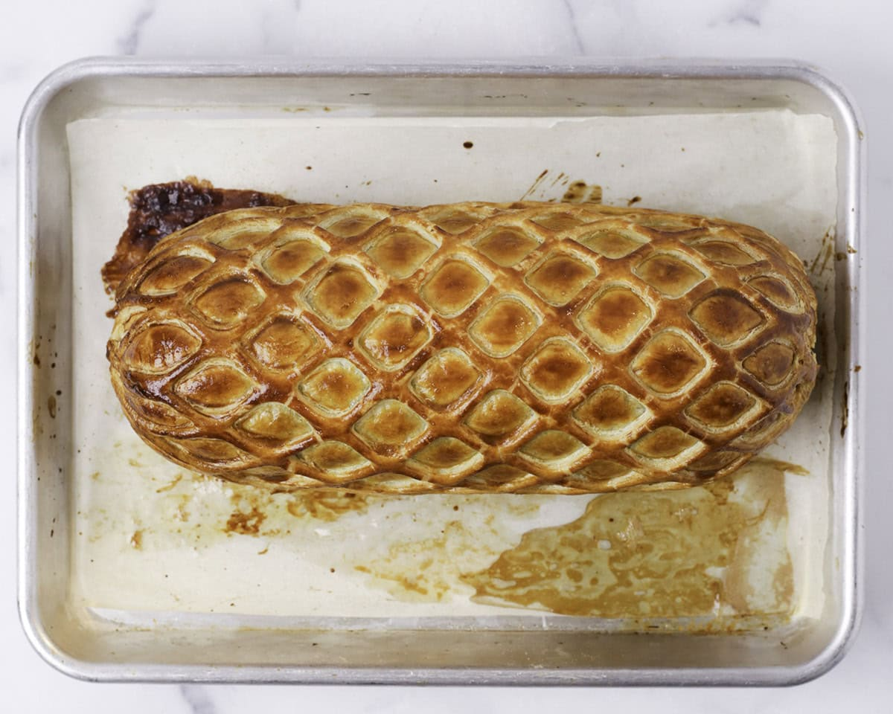
-
Serve the beef wellingtons sliced, with the sauce as an accompaniment.
View photo